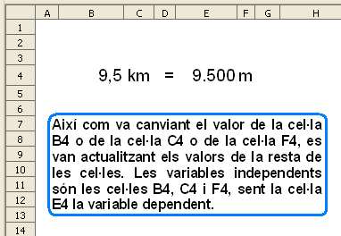
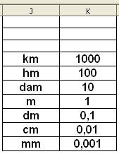
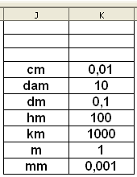

Presentació gràfica de l'activitat

Funcions que es fan servir en aquesta activitat
Objectiu de l'activitat
Fer conversions automàtiques canviant els valors númèrics o els valors de lletres.
Desenvolupament de l'activitat
1. Obrir el fitxer M5 i afegir un nou full amb el nom de M5P8 conversions.
2. Fer que el codi de format de la cel·la B4 sigui: #.##0,##
3. Fer que el codi de format de la cel·la E4 sigui: #.##0,######
Aquests codis de format numèric permeten escriure els números amb decimals
i amb separadors de milers. Observar els codis de format numèric que hi ha a l'ajuda de l'Open Ofice premen la tecla F1. Un vegada estigui oberta l'ajuda, obrir la pestanya Índex i esciure a la finestra de cerca el terme:
formatos numéricos;códigos i després fer doble clic en códigos.
4. Validar les cel·les
C4 i
F4 perquè només accepte el següent:
km,
hm,
dam,
m,
dm,
cm,
mm
5. Escriure a la cel·la
D4 el signe d'igual.
6. Escriure a les cel·les del rang
J4:K10 el següent:

7. Seleccionar les cel·les del rang
J4:K10 i ordenar-les per la columna
J (ascendent). Havent fet l'ordenació, quedaria així:

D'aquesta manera es fa una consulta ordenada i s'evita que doni error precisament perquè la llista de paraules està ordenada.
8. Esciure a la cel·la
H4:
=CONSULTA(C4;J4:J10;K4:K10)
És probable que després d'escriure aquesta fórmula es mostri #N/D perquè encara no hi ha res escrit a la cel·la C4 (criteri de cerca de la consulta)
9. Escriure a la cel·la
I4:
=CONSULTA(F4;J4:J10;K4:K10)
Aquesta consulta també es podria fer amb la funció =CONSULTAV( ) amb la qual cosa no caldria fer la prèvia ordenació comentada en el pas 7.
10. Escriure a la cel·la
H5:
=H4/I4
El fet de dividir el valor de la cel·la H4 per la cel·la I4, permet obtenir la raó que multiplicada pel valor de la cel·la B4 dóna el resultat final. Per exemple, si a la cel·la C4 hi ha km i a la cel·la F4 hi ha dam, en escriure 1 a la cel·la B4 llavors la cel·la E4 mostrarà el valor de 100 (1 km = 100 dam).
11. Finalment escriure a la cel·la
E4:
=B4*H5
12. Protegir les cel·les que convingui.
13. Ocultar les cel·les que convingui.
14. Comprovar que funcioni correctament l'activitat.
15. Desar el fitxer
M5.